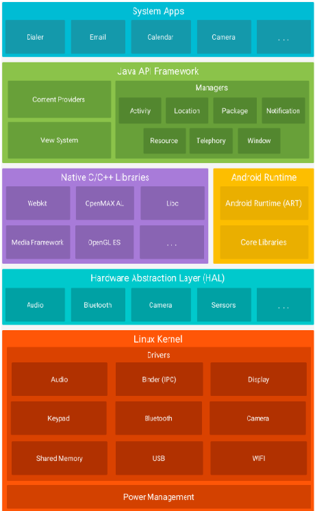

Los componentes principales del sistema operativo de Android (cada sección se describe en detalle):
Arquitectura

Aplicaciones:
las aplicaciones base incluyen un cliente de correo electrónico, programa de SMS, calendario, mapas, navegador, contactos y otros. Todas las aplicaciones están escritas en lenguaje de programación Java.
Marco de trabajo de aplicaciones:
los desarrolladores tienen acceso completo a los mismas API del entorno de trabajo usados por las aplicaciones base. La arquitectura está diseñada para simplificar la reutilización de componentes; cualquier aplicación puede publicar sus capacidades y cualquier otra aplicación puede luego hacer uso de esas capacidades (sujeto a reglas de seguridad del framework). Este mismo mecanismo permite que los componentes sean reemplazados por el usuario.
Bibliotecas:
Android incluye un conjunto de bibliotecas de C/C++ usadas por varios componentes del sistema. Estas características se exponen a los desarrolladores a través del marco de trabajo de aplicaciones de Android. Algunas son: System C library (implementación biblioteca C estándar), bibliotecas de medios, bibliotecas de gráficos, 3D y SQLite, entre otras.
Runtime de Android:
Android incluye un set de bibliotecas base que proporcionan la mayor parte de las funciones disponibles en las bibliotecas base del lenguaje Java. Cada aplicación Android corre su propio proceso, con su propia instancia de la máquina virtual Dalvik. Dalvik ha sido escrito de forma que un dispositivo puede correr múltiples máquinas virtuales de forma eficiente. Dalvik ejecutaba hasta la versión 5.0 archivos en el formato de ejecutable Dalvik (.dex), el cual está optimizado para memoria mínima. La Máquina Virtual está basada en registros y corre clases compiladas por el compilador de Java que han sido transformadas al formato.dex por la herramienta incluida dx. Desde la versión 5.0 utiliza el ART, que compila totalmente al momento de instalación de la aplicación.
Núcleo Linux:
Android depende de Linux para los servicios base del sistema como seguridad, gestión de memoria, gestión de procesos, pila de red y modelo de controladores. El núcleo también actúa como una capa de abstracción entre el hardware y el resto de la pila de software.